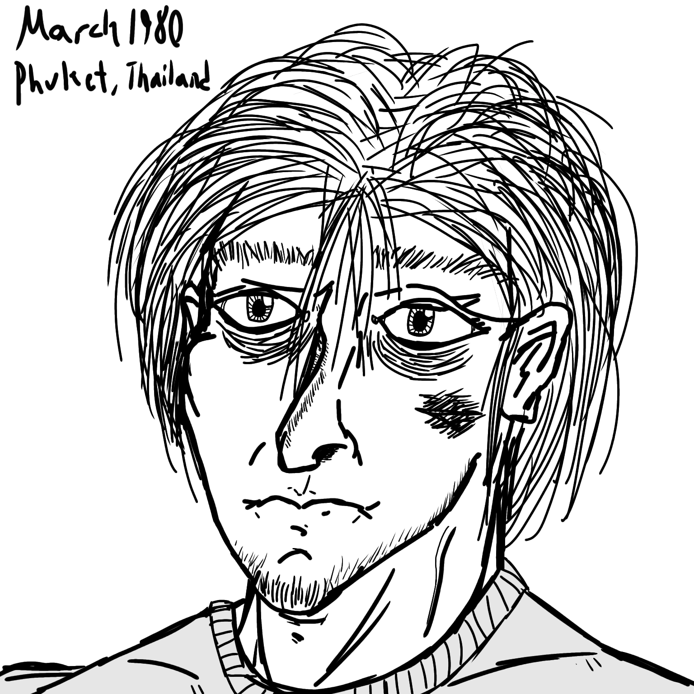

Meet The Phenoms
Alistair Morrison
Height: 5'10" / 178 cm.
Weight: 150 lb. / 68 kg. / 10.7 st.
Blood Type:
Hair Color: Auburn
Eye Color: Blue
Age: 29
Nationality: Kingdom of Thailand
Bio: Scottish-born, parents immigrated to Thailand when he was 6 years old. Born into wealth, he dropped out of high school at 16, abandoned his family
and began Muay Thai to keep food on the table. A little later he joins the Krating Daeng for money and aligning views, but ultimately left after several
failed coups. He kept pursuing Muay Thai, while simultaneously beginning a life of crime, being involved in illegal gambling scandals revolving around
some of his fights.